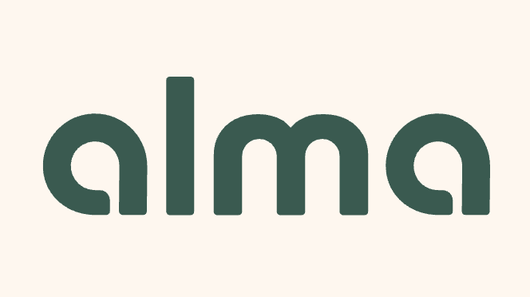
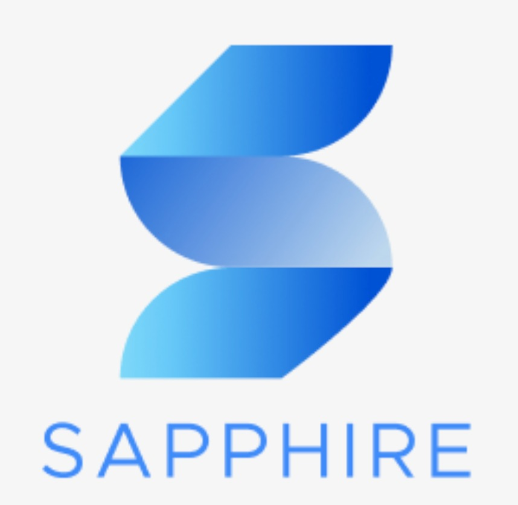
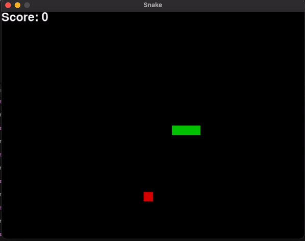
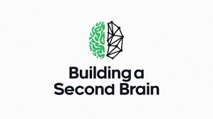
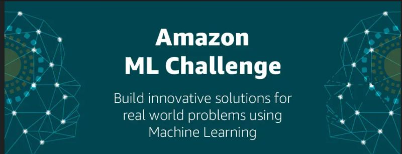
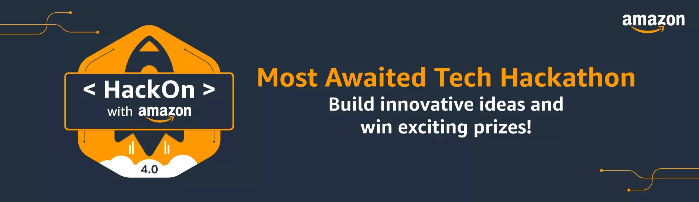
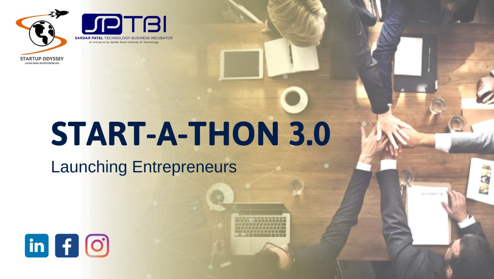
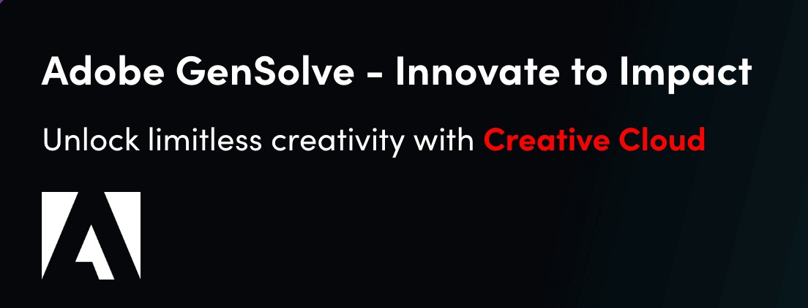
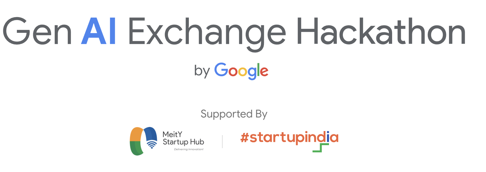
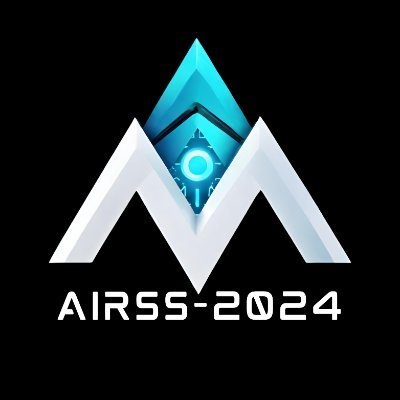

|
Debjyoti Ray I'm a ML Engineer at Miiflow Inc., where I work on machine learning, and applied AI engineering. My research interests include multimodal AI, diffusion models, reinforcement learning, interpretability of language models, and multi-agent systems. I've worked on scalable OCR pipelines, biomedical knowledge graphs, and ensemble trading agents. I'm pursuing a B.Tech in Electronics and Communication Engineering at IIIT Allahabad and a B.S. in Data Science at IIT Madras. I am currently really interested in image-vision diffusion models, agentic systems and scalable architectures. |

|
Education |

|
Bachelors of Technology(B. Tech) in Electronics and Communication Engineering
Indian Institute of Information Technology, Allahabad Expected October 2026 GPA: 8.4/10 |

|
Bachelors of Science(B.S.) in Data Science
Indian Institute of Technology, Madras Expected June 2026 GPA: 8.13/10 |
ExperienceMy professional experience spans AI engineering, machine learning research, and quantitative finance. |
|
|
ML Engineer
Miiflow Inc. | Remote August 2025 - Present
• Engineered a unified LLM orchestration layer for Miiflow replacing LlamaIndex, supporting 7+ providers with <200 ms latency overhead, streaming, ReAct reasoning, and 95% test coverage.
|

|
Software Dev Engineer Intern
Amazon Web Services (AWS Q for Business) | Bangalore, India April 2025 - May 2025
• Integrated real-time voice-driven bidirectional streaming APIs into AWS Q for Business using Coral (Amazon's Java/Spring framework), enabling seamless voice-to-LLM-voice interactions via Bedrock-hosted models and EC2-deployed services.
|
|
|
AI Engineer Intern
TransHumanity | Remote(London, United Kingdom) April 2025 - May 2025
• Packaged an independent Python‑based text→SQL CLI tool (text_to_sql.py) that parses 4+ parameters (vehicle type, sensor, date range, aggregation) from natural language and emits valid PostgreSQL queries with 98% syntactic accuracy, cutting manual query writing time by 70%.
|
|

|
AI Engineer
ALMA Inc. | Remote (San Francisco Bay Area) Feb 2025 - Apr 2025
• Resolved 40+ support tickets via Notion, Linear, and Slack; on user onboarding by deploying seamless OCR and parameter extraction pipelines from submitted legal documents, improving user intake efficiency by 23%.
|
|
|
ML Research Intern
Crecientech in association with University of Missouri-Columbia (Profs. Dong Xu & Gyan Srivastava) | Remote (Boston, Massachusetts) Dec 2024 - Feb 2025
• Built a biomedical knowledge graph pipeline processing 500+ PubMed abstracts with MedPalm-2, achieving 92% accuracy in protein-pathway mapping cross-referenced with STRING-db, and Reactome.
|
|

|
Research and Business Lead (Co-Founder)
Sapphire: AI Trader | India August 2023 - Present
• Developed a novel ensemble trading agent using multiple SOTA reinforcement learning algorithms combined with LLMs on stock market data, achieving a 20% increase in annualized returns and a 15% reduction in volatility.
|
|
|
ML Research Intern
Crecientech in association with University of Missouri-Columbia (Profs. Dong Xu & Gyan Srivastava) | Remote (Boston, Massachusetts) May 2024 - July 2024
• Engineered a fine‑tuned BioBERT model by curating ~500 Q&A pairs from 30 PubMed papers—boosting structured‑format adherence by 45% and factual accuracy by 30%.
|

|
Quantitative Research Consultant Intern
WorldQuant | Remote (Mumbai, India) January 2024 - May 2024
• Developed over 150 predictive alphas to forecast market trends in the USA and China, using comprehensive price-volume and sentiment datasets; delivered alpha submissions with Sharpe ratios under 3.45 and fitness above 1.2.
|
Publications |
|
Target and Biomarker Exploration Portal for Drug Discovery research
Bhupesh Dewangan, Debjyoti Ray, Sameera Devulapalli, Yijie Ren, Shraddha Srivastava, Shilpi Chaurasia, Lei Jiang, Muneendra Ojha , Dong Xu, Gyan Srivastava BioInformatics, 2025 (Under Review) paper / Live version of the tool / Team / Tutorial videos A comprehensive knowledge graph-based portal for drug discovery research focusing on biomarker exploration and target identification, integrating data from multiple biomedical databases. |
|
|  |
Deep Q-Snake: An Intelligent Agent Mastering the Snake Game with Deep Reinforcement Learning
Debjyoti Ray; Arindam Ghosh; Muneendra Ojha ; Krishna Pratap Singh IEEE TENCON-2024 paper / code / certificate / Demo video This paper explores the application of Deep Q-Learning to create an intelligent agent capable of mastering the classic Snake game, demonstrating the effectiveness of reinforcement learning in game environments. |
Currently Working On |
|
TAU-KG Knowledge-Graph Pipeline
Under guidance of Dr. Gyan Srivastava & AstraZeneca | Feb 2025 – Present
• Processed 4 full-text PDFs (≈240 total 256-token chunks) and embedded each chunk into a FAISS index (sub-100 ms lookup); migrating to Weaviate and ChromaDB for richer metadata support and horizontal scaling.
|
|
|  |
Second-Brain AI Assistant
Self-Directed | March 2025 – Present (Stage 2)
• Currently implementing Stage 2 data-engine pipelines: orchestrating a Python ETL workflow to ingest Notion snapshots and crawled web resources, apply heuristic and LLM-based quality scoring, and store processed documents in MongoDB for downstream retrieval.
|
Projects |
|

|
Amazon ML Challenge 2025: Multimodal Pricing Engine
October 2025
• Architected a multimodal price prediction system using cross-attention fusion of image (SigLIP-giant, 768-dim) and text (Gemma-300M, 384-dim) embeddings, replacing naive concatenation with dual-pathway attention mechanism (8 heads) for context-aware feature interaction.
|
|
|
Amazon ML Challenge 2024: Feature Extraction from Images
September 2024
• Processed 260,000+ images using PaddleOCR and Qwen-2VL-2B, fine-tuning the latter on 50,000 images by freezing non-critical layers and applying LoRA adapters with 4-bit quantization and FP16 precision. Evaluated performance based on multi-language accuracy and text orientation handling; ranking us 12th out of 75,000+ participating teams.
|
|

|
StreamShop: Real-Time Object Detection
September 2024
• Composed a few-shot dataset by overlaying 5–10 Amazon Berkeley product cutouts per Panchayat scene—yielding thousands of unique training samples
|
Hackathons |
|  |
Start-a-thon 2023
Startup India National Competition
• Researched and architected an ensemble trading agent blending PPO, A2C, and SAC DRL algorithms—achieving a 20% higher annualized return compared to individual agents
|
|  |
Adobe Gensolve 2024
Top 50 Nationwide
• Analyzed 500+ hand‑drawn curve samples, extracting 10+ geometric features (e.g., curvature, length, closure) to drive algorithm selection and parameter tuning
|
|  |
Google GEN-AI Hackathon 2024
Top 200 Teams Globally
• Built RESTful endpoints in Flask to orchestrate generative AI tasks via Google Gemini‑Pro, embedding a safety layer to guarantee valid JSON outputs across all routes
|
Research Summits |
|  |
All India Research Scholar Summit (AIRSS) 2024
IIT Madras - Best Product Winners Oral Presentation / Certificate
• Engaged with 5+ venture capitalists to validate Sapphire's strategic vision and incorporate direct investor feedback
|
Exams |
JEE & KVPY |
JEE MAINS 2022: 99.28 percentile
|